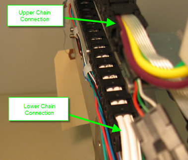

This procedure describes how to replace the service cable on any linear slide pick-and-place module.
Replace the service loop cable when:
- the service cable is cracked.
- the service cable is suspect in intermittent problems.
- STS requests replacement.
-
Preparation for replacing the service cable.
-
Remove the pick-and-place module gantry to be serviced.
Caution: The PCB should be resting on the work surface. Be cautious not to damage the PCB or connector pins.
-
Remove the screw attaching the front guide (Picture B below).
-
Remove the front guide.
-
Loosen the screw securing the restrain clip that holds down the connector on the pick-and-place Hall effect PCB and disconnect the ribbon cable (Picture A below).
-
Remove the rear guide (Picture B below).
-
Remove the service loop clamps from both ends of the chain (Picture below).
-
Disconnect the Z motor harness and remove the wiring from the clamp (Picture below).
-
Disconnect the Z motor harness from the Z home sensor (Picture below).
-
Disconnect wiring from the Pick and Place interface PCB (Picture below).
-
Disconnect the service cable from the interface PCB.
-
Disconnect the Z motor and Z home sensor from the interface PCB.
-
Remove the Z motor harness from the clamp and free the harness from the gantry crossbar.
Note: Freeing the Z motor harness from the gantry crossbar may require removal of the interface PCB. This will be necessary if the motor cable is routed behind the PCB.
-
Remove the chain.
-
Remove the 2 securing screws at each end of the chain (picture below).
-
Remove the chain. Extend the chain and place it so that the links face upward.
-
Open the chain links (Picture below).
-
Replacing the service loop component in the chain.
-
Remove the component in question.
-
Add the replacement component to the chain.
-
Be aware of the orientation of the components in the chain.
- The motor harness lies at the bottom of the chain.
- The pneumatic tubing and the service cable are placed closest to the chain links.
-
Secure the chain links.
-
Reassembling the service loop.
-
Mount the chain.
- See picture below for chain orientation.
- Secure the chain with 2 screws at each end of chain.

-
Route the service cable and pneumatic tubing into the front and rear guides (picture below) and secure the screws for both guides.
-
Connect the service cable to the Hall effect PCB and secure it with the restrain clip.
-
Connect the Z motor harness to the motor and the sensor.
-
Connect the other end of the service cable to the interface PCB.
-
Route the Z harness through the crossbar clamp and connect the Z motor and sensor connections.
-
Secure the service loop clamps to both ends of the chain.
-
Install the Pick and Place and verify the module operation.
-
Install the Pick and Place module.
-
Verify pick-and-place alignments.
-
Run 100 reps of the vessel exerciser.
Note: Select a route that uses the pick-and-place serviced.